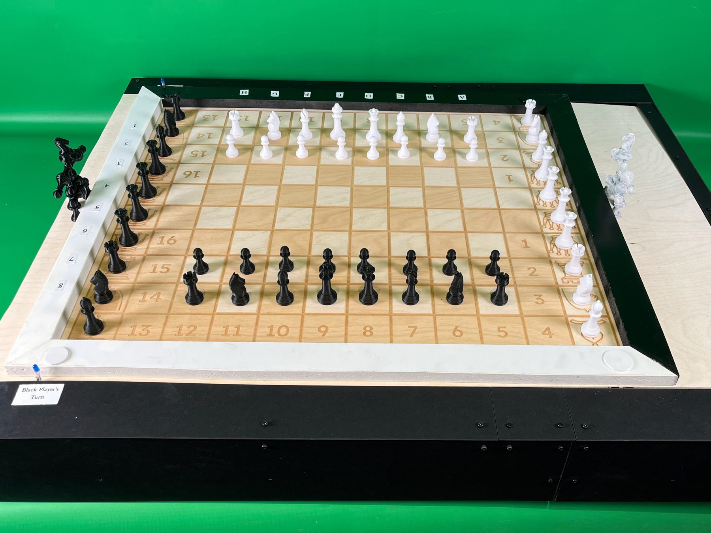
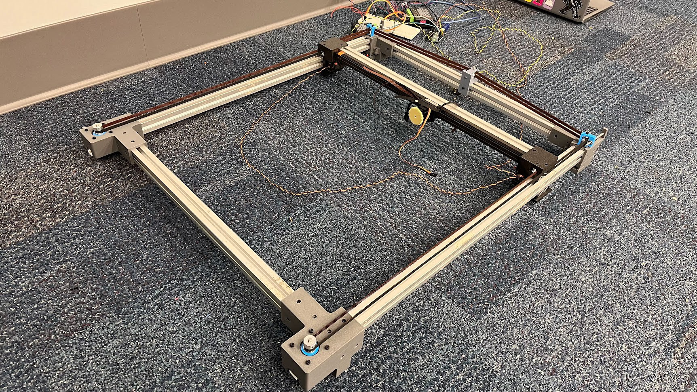
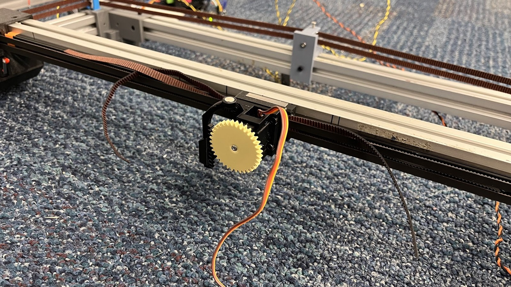
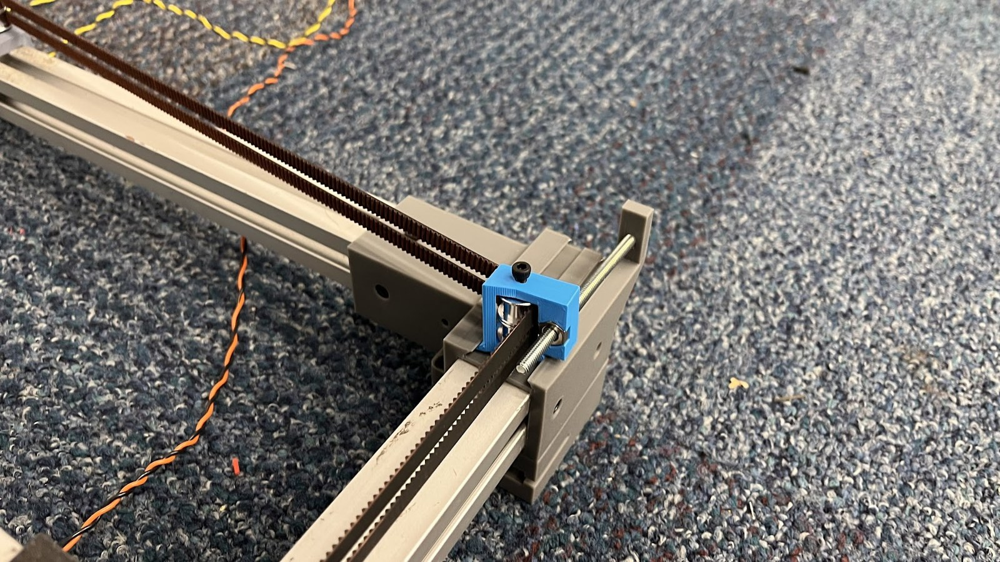
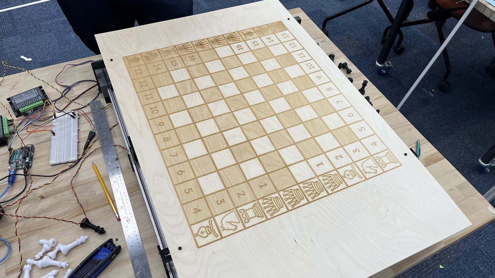

The idea
Our team built an automated chessboard that moves pieces using a Core-XY gantry and magnets. The mechanism stays inside the board so the pieces appear to move on their own. The final demonstration achieved a full computer-vs-computer game.
My contribution
I designed the board mounts and helped design the belt tensioners, magnet carriage, and side panels. These interfaces connected the moving gantry to the finished board and its enclosure.




Designing for repeatable motion
- A concealed Core-XY layout kept both drive motors on the frame and reduced the height of the assembly.
- A servo-driven permanent magnet lifts toward the pieces for motion and retracts to release them.
- Adjustable screw-and-nut tensioners improved control of belt tension after the initial tensioning arrangement proved difficult to tighten.
- Board alignment and laser-cutting kerf affected the side panels, making fabrication and assembly tolerances important to the final fit.




What worked, and what remained
The mechanical system executed a complete computer-vs-computer game. Human-move detection through a Hall-effect sensor array remained a stretch goal: sensing was not consistent enough to support that mode at the final demonstration.
The tensioners also revealed a useful next iteration: stiffen the printed parts and reduce play in the dovetail guides for longer-term use.
In action
Team
David Bardalez · Kieran Erwin · Prem Fedtchenko · Mehmet Firat · Ananth Kutuva